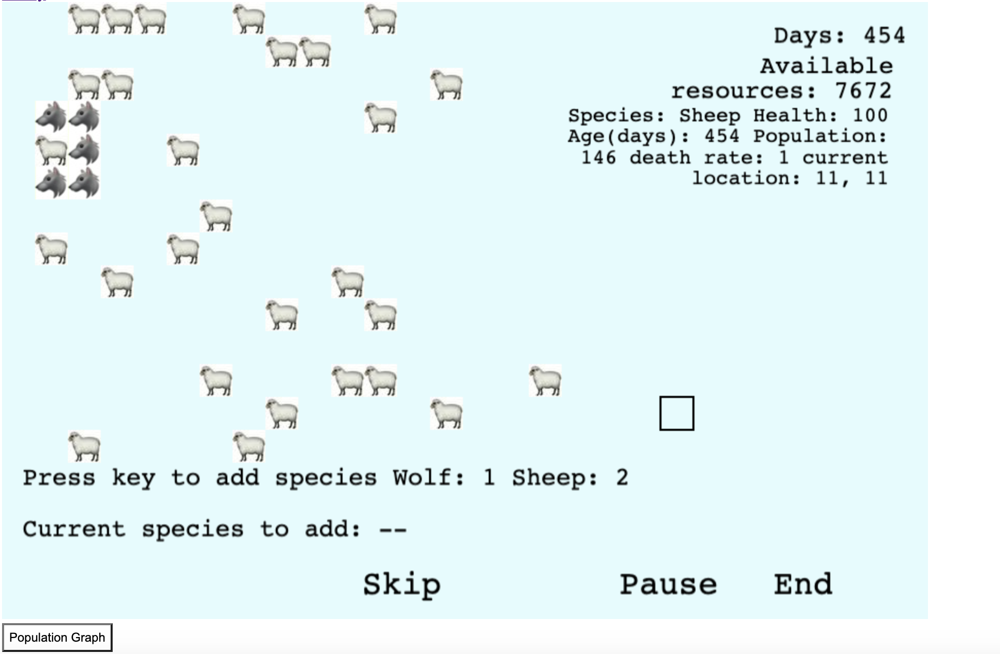
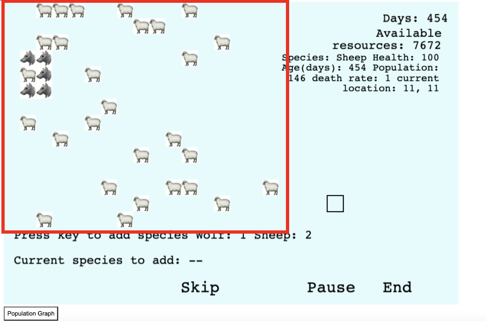
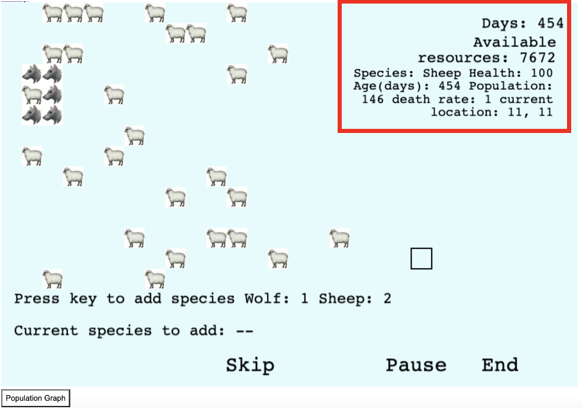
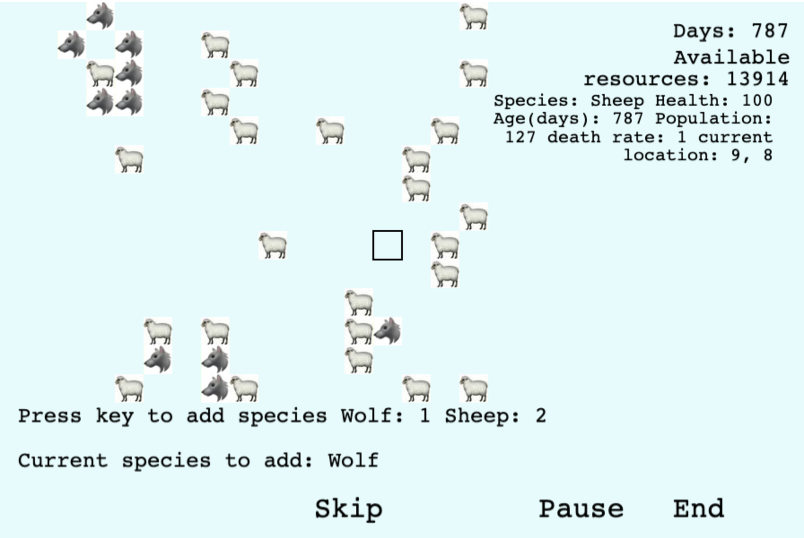
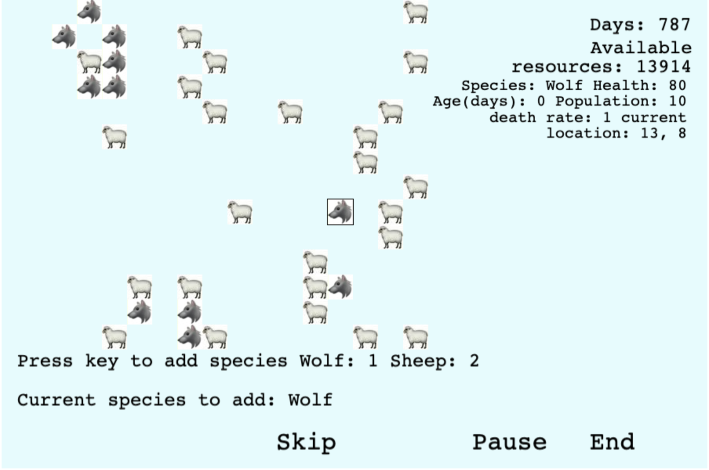
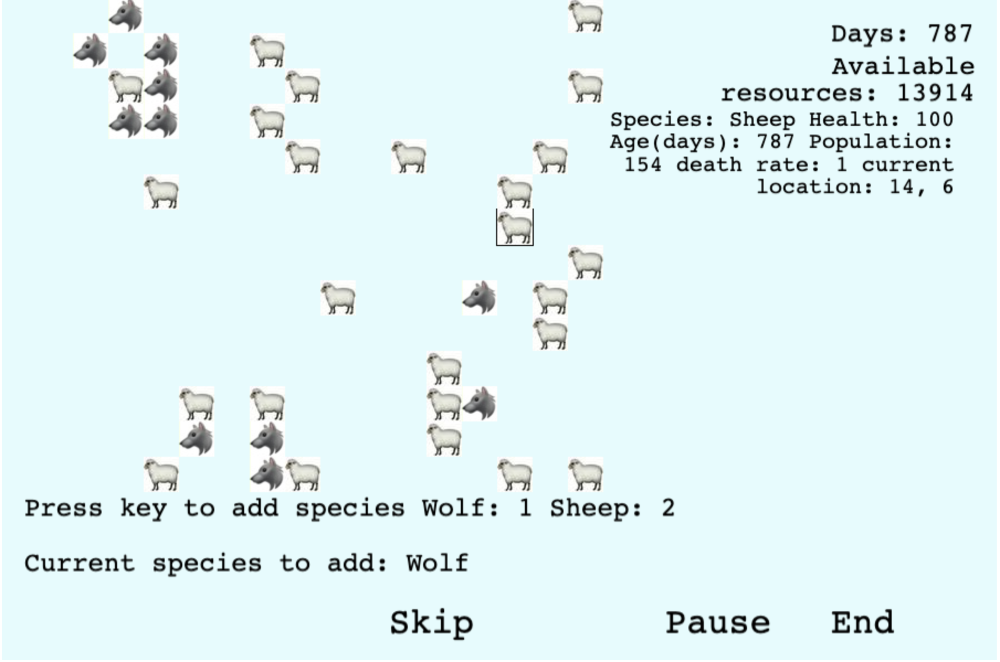
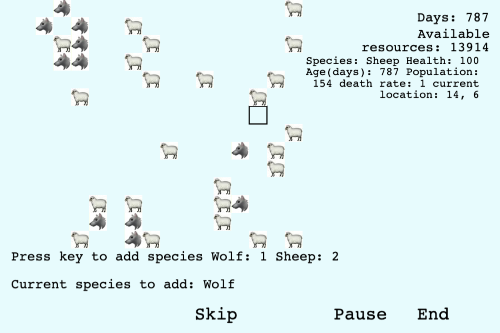
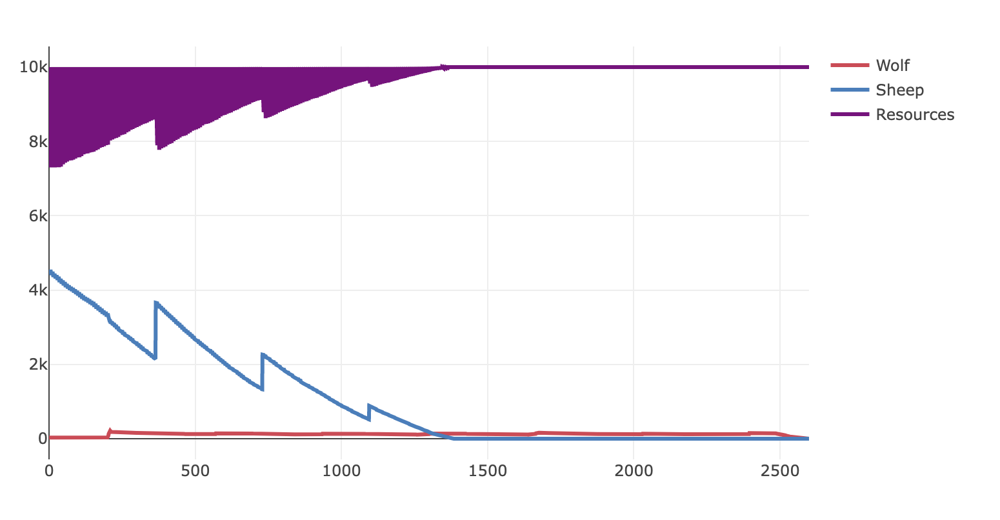

This is a simple guide to show you how the game works
Before entering the game, you need to go through several steps to build the ecosystem.
The first step is to choose whether you want to start with a fixed combination or your own choice.
The first two options choose the species and the amount of resources in the environment for you while the third one allows you to choose whatever species you like and decide the amount of resources in the ecosystem.
If you chose the third option in the previous step, you need to complete this additional step: choosing the species to place in the ecosystem.
In this step, you need to enter the number of available resources and creatures.
Ater all the setups, the following image is an example of what you will see in the actual game. And the rest of the guide will walk through some elements in the game and show you how to make use of them.
First, inside the red frame, you can see some images of animals in the picture. This is the "map" of the ecosystem, showing the locations of creatures. Each tile represents a pack of creatures. During the game, predators, such as wolves and cats, will move close to the preys and tend to hang around near them. Preys, in the contrary, tends to stay in a fixed location.
On the right, you can see some values.
The first one is "Day". The game updates information about the ecosystem by days. It's used to determine whether creatures need to eat or able to reproduce. It's also used to evaluate how good the ecosystem is. The longer it lasts, the better it is.
The second one is available resources. Its initial value is determined during the setup stage. It will be consumed by primary consumer, such as sheep and bird. Its amount will be recovered over time. However, the amount of recovery is based on its current value. Thus, the fewer the resources, the fewer it recovers. This also means if all resources have been consumed, it will no longer be recovered.
Below the available resources are some values of the pack. Moving your cursor on an image, the corresponding information of it will be displayed in this area. The first is the species of the pack you select. The health value indicates how healthy is the population which is impacted by their activities. Next, you can see a death rate value. This also reflects the health of the population. It tells you how likely an individual may die in the near future.
Around the left-bottom of the image, you can see the instructions of adding more creatures. Pressing corresponding keys, you can change the species you wish to add. And when you click on an empty tile, a new pack will be added to the ecosystem. Similarly, clicking on a non-empty tile removes that pack.
In the image below, key 1 is pressed, so the species to add is set to wolf. And an empty tile is selected.
Clicked the empty tile and now a new wolf appears.
In the game, you can also manipulate populations by removing some existing creatures.
Now, in the image below, the cursor selects a sheep tile to be removed.
Clicked that tile and that sheep disappears.
Around the right-bottom, you can see three buttons. The skip allows you to jump to the end of the game if you want to skip the wait. Clicking the pause button pauses the game and clicking it again to recover. End button allows you to terminate the game and to go back to the main page.
Clicking on the population graph icon, it will redirect you to a new page where the populations are displayed in a graph. You can click on it anytime during the game and the graph will reflect all the information from the start of the game till the time you click the button. The following image is an example of population graph.
Note: Once you go back to the game from the graph, the game will restart, meaning you'll lose previous progress.
